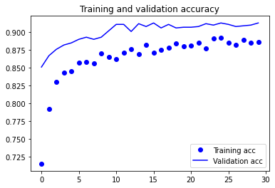
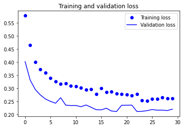
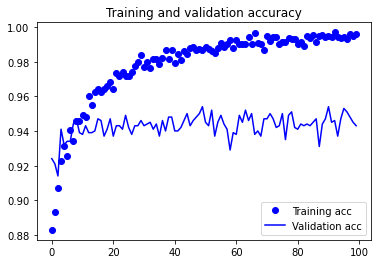
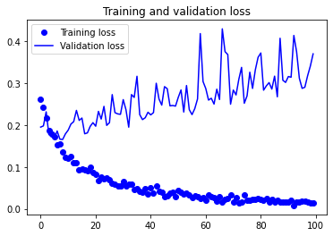

Old Preprocessings 1 2 3 4 5 6 7 8 9 10 11 12 13 14 15 16 17 import numpy as np import pandas as pd import osfor dirname, _, filenames in os.walk('/kaggle/input' ): for filename in filenames: print (os.path.join(dirname, filename))
/kaggle/input/dogs-vs-cats-redux-kernels-edition/sample_submission.csv
/kaggle/input/dogs-vs-cats-redux-kernels-edition/train.zip
/kaggle/input/dogs-vs-cats-redux-kernels-edition/test.zip
1 2 3 import zipfilewith zipfile.ZipFile("../input/dogs-vs-cats-redux-kernels-edition/" +"train" +".zip" ,"r" ) as z: z.extractall("." )
1 2 3 import zipfilewith zipfile.ZipFile("../input/dogs-vs-cats-redux-kernels-edition/" +"test" +".zip" ,"r" ) as z: z.extractall("." )
1 2 3 4 5 6 7 8 import os, cv2, re, randomimport numpy as npimport pandas as pdfrom keras.preprocessing.image import ImageDataGeneratorfrom keras.preprocessing.image import img_to_array, load_imgfrom keras import layers, models, optimizersfrom keras import backend as Kfrom sklearn.model_selection import train_test_split
1 2 3 4 5 6 img_width = 150 img_height = 150 TRAIN_DIR = '/kaggle/working/train/' TEST_DIR = '/kaggle/working/test/' train_images_dogs_cats = [TRAIN_DIR+i for i in os.listdir(TRAIN_DIR)] test_images_dogs_cats = [TEST_DIR+i for i in os.listdir(TEST_DIR)]
1 2 print (len (train_images_dogs_cats))print (len (test_images_dogs_cats))
25000
12500
1 2 3 4 5 def atoi (text ): return int (text) if text.isdigit() else text def natural_keys (text ): return [ atoi(c) for c in re.split('(\d+)' , text) ]
1 num_of_each_sample = 1500
1 2 train_images_dogs_cats.sort(key=natural_keys) print (len (train_images_dogs_cats))
25000
1 2 3 train_images_dogs_cats = train_images_dogs_cats[0 :num_of_each_sample] + train_images_dogs_cats[12500 :12500 +num_of_each_sample] test_images_dogs_cats.sort(key=natural_keys) print (len (train_images_dogs_cats))
3000
1 2 3 4 5 6 7 8 9 10 11 12 13 14 15 16 17 18 19 20 def prepare_data (list_of_images ): """ Returns two arrays: x is an array of resized images y is an array of labels """ x = [] y = [] for image in list_of_images: x.append(cv2.resize(cv2.imread(image), (img_width,img_height), interpolation=cv2.INTER_CUBIC)) for i in list_of_images: if 'dog' in i: y.append(1 ) elif 'cat' in i: y.append(0 ) return x, y
1 2 X, Y = prepare_data(train_images_dogs_cats) print (K.image_data_format())
channels_last
1 2 X_train, X_val, Y_train, Y_val = train_test_split(X,Y, test_size=0.3333334 , random_state=1 )
1 2 3 4 5 6 nb_train_samples = len (X_train) nb_validation_samples = len (X_val) batch_size = 20 print (nb_train_samples)print (nb_validation_samples)
1999
1001
1 2 3 from keras.applications import VGG16conv_base = VGG16(weights='imagenet' ,include_top=False ,input_shape=(img_width, img_height, 3 ))
Downloading data from https://storage.googleapis.com/tensorflow/keras-applications/vgg16/vgg16_weights_tf_dim_ordering_tf_kernels_notop.h5
58892288/58889256 [==============================] - 0s 0us/step
Model: "vgg16"
_________________________________________________________________
Layer (type) Output Shape Param #
=================================================================
input_1 (InputLayer) [(None, 150, 150, 3)] 0
_________________________________________________________________
block1_conv1 (Conv2D) (None, 150, 150, 64) 1792
_________________________________________________________________
block1_conv2 (Conv2D) (None, 150, 150, 64) 36928
_________________________________________________________________
block1_pool (MaxPooling2D) (None, 75, 75, 64) 0
_________________________________________________________________
block2_conv1 (Conv2D) (None, 75, 75, 128) 73856
_________________________________________________________________
block2_conv2 (Conv2D) (None, 75, 75, 128) 147584
_________________________________________________________________
block2_pool (MaxPooling2D) (None, 37, 37, 128) 0
_________________________________________________________________
block3_conv1 (Conv2D) (None, 37, 37, 256) 295168
_________________________________________________________________
block3_conv2 (Conv2D) (None, 37, 37, 256) 590080
_________________________________________________________________
block3_conv3 (Conv2D) (None, 37, 37, 256) 590080
_________________________________________________________________
block3_pool (MaxPooling2D) (None, 18, 18, 256) 0
_________________________________________________________________
block4_conv1 (Conv2D) (None, 18, 18, 512) 1180160
_________________________________________________________________
block4_conv2 (Conv2D) (None, 18, 18, 512) 2359808
_________________________________________________________________
block4_conv3 (Conv2D) (None, 18, 18, 512) 2359808
_________________________________________________________________
block4_pool (MaxPooling2D) (None, 9, 9, 512) 0
_________________________________________________________________
block5_conv1 (Conv2D) (None, 9, 9, 512) 2359808
_________________________________________________________________
block5_conv2 (Conv2D) (None, 9, 9, 512) 2359808
_________________________________________________________________
block5_conv3 (Conv2D) (None, 9, 9, 512) 2359808
_________________________________________________________________
block5_pool (MaxPooling2D) (None, 4, 4, 512) 0
=================================================================
Total params: 14,714,688
Trainable params: 14,714,688
Non-trainable params: 0
_________________________________________________________________
Because models behave just like layers, you can add a model (like conv_base) to a Sequential model just like you would add a layer
1 2 3 4 5 6 7 8 from keras import modelsfrom keras import layersmodel = models.Sequential() model.add(conv_base) model.add(layers.Flatten()) model.add(layers.Dense(256 , activation='relu' )) model.add(layers.Dense(1 , activation='sigmoid' ))
Model: "sequential"
_________________________________________________________________
Layer (type) Output Shape Param #
=================================================================
vgg16 (Functional) (None, 4, 4, 512) 14714688
_________________________________________________________________
flatten (Flatten) (None, 8192) 0
_________________________________________________________________
dense (Dense) (None, 256) 2097408
_________________________________________________________________
dense_1 (Dense) (None, 1) 257
=================================================================
Total params: 16,812,353
Trainable params: 16,812,353
Non-trainable params: 0
_________________________________________________________________
As you can see, the convolutional base of VGG16 has 14,714,688 parameters, which is very large. The classifier you’re adding on top has 2 million parameters
Important Note #1 Before compiling and training the model, it’s very important to freeze the convolutional base. Freezing a layer or set of layers means preventing their weights from being updated during training . If you don’t do this, then the representations that were previously learned by the convolutional base will be modified during training
Because the Dense layers on top are randomly initialized, very large weight updates would be propagated through the network, effectively destroying the representations previously learned
1 2 print ('This is the number of trainable weights ' 'before freezing the conv base:' , len (model.trainable_weights))
This is the number of trainable weights before freezing the conv base: 30
In Keras, you freeze a network by setting its trainable attribute to False :
1 conv_base.trainable = False
1 2 print ('This is the number of trainable weights ' 'after freezing the conv base:' , len (model.trainable_weights))
This is the number of trainable weights after freezing the conv base: 4
With this setup, only the weights from the two Dense layers that you added will be trained. That’s a total of four weight tensors: two per layer (the main weight matrix and the bias vector)
Important Note #2 Note that in order for these changes to take effect, you must first compile the model. If you ever modify weight trainability after compilation, you should then recompile the model, or these changes will be ignored
1 2 3 4 5 6 7 8 9 10 11 12 train_datagen = ImageDataGenerator( rescale=1. /255 , rotation_range=40 , width_shift_range=0.2 , height_shift_range=0.2 , shear_range=0.2 , zoom_range=0.2 , horizontal_flip=True , fill_mode='nearest' ) test_datagen = ImageDataGenerator(rescale=1. /255 )
1 2 train_generator = train_datagen.flow(np.array(X_train), Y_train, batch_size=batch_size) validation_generator = test_datagen.flow(np.array(X_val), Y_val, batch_size=batch_size)
1 2 3 4 5 6 7 8 9 10 11 model.compile (loss='binary_crossentropy' , optimizer=optimizers.RMSprop(lr=2e-5 ), metrics=['acc' ]) history = model.fit_generator( train_generator, steps_per_epoch=np.ceil(nb_train_samples/batch_size), epochs=30 , validation_data=validation_generator, validation_steps=np.ceil(nb_validation_samples/batch_size))
Epoch 1/30
100/100 [==============================] - 14s 136ms/step - loss: 0.5779 - acc: 0.7154 - val_loss: 0.4019 - val_acc: 0.8511
Epoch 2/30
100/100 [==============================] - 12s 123ms/step - loss: 0.4645 - acc: 0.7919 - val_loss: 0.3314 - val_acc: 0.8671
Epoch 3/30
100/100 [==============================] - 13s 128ms/step - loss: 0.4007 - acc: 0.8304 - val_loss: 0.2953 - val_acc: 0.8761
Epoch 4/30
100/100 [==============================] - 12s 123ms/step - loss: 0.3730 - acc: 0.8434 - val_loss: 0.2743 - val_acc: 0.8821
Epoch 5/30
100/100 [==============================] - 13s 126ms/step - loss: 0.3601 - acc: 0.8449 - val_loss: 0.2589 - val_acc: 0.8851
Epoch 6/30
100/100 [==============================] - 13s 131ms/step - loss: 0.3390 - acc: 0.8574 - val_loss: 0.2496 - val_acc: 0.8901
Epoch 7/30
100/100 [==============================] - 12s 123ms/step - loss: 0.3267 - acc: 0.8579 - val_loss: 0.2426 - val_acc: 0.8931
Epoch 8/30
100/100 [==============================] - 13s 127ms/step - loss: 0.3159 - acc: 0.8564 - val_loss: 0.2638 - val_acc: 0.8901
Epoch 9/30
100/100 [==============================] - 12s 120ms/step - loss: 0.3194 - acc: 0.8699 - val_loss: 0.2351 - val_acc: 0.8931
Epoch 10/30
100/100 [==============================] - 13s 129ms/step - loss: 0.3091 - acc: 0.8649 - val_loss: 0.2337 - val_acc: 0.9021
Epoch 11/30
100/100 [==============================] - 13s 127ms/step - loss: 0.3071 - acc: 0.8619 - val_loss: 0.2340 - val_acc: 0.9111
Epoch 12/30
100/100 [==============================] - 12s 125ms/step - loss: 0.3014 - acc: 0.8709 - val_loss: 0.2293 - val_acc: 0.9111
Epoch 13/30
100/100 [==============================] - 13s 126ms/step - loss: 0.2945 - acc: 0.8764 - val_loss: 0.2358 - val_acc: 0.9011
Epoch 14/30
100/100 [==============================] - 12s 120ms/step - loss: 0.2969 - acc: 0.8694 - val_loss: 0.2270 - val_acc: 0.9121
Epoch 15/30
100/100 [==============================] - 13s 130ms/step - loss: 0.2774 - acc: 0.8819 - val_loss: 0.2177 - val_acc: 0.9081
Epoch 16/30
100/100 [==============================] - 12s 124ms/step - loss: 0.3002 - acc: 0.8714 - val_loss: 0.2173 - val_acc: 0.9131
Epoch 17/30
100/100 [==============================] - 12s 125ms/step - loss: 0.2858 - acc: 0.8749 - val_loss: 0.2234 - val_acc: 0.9061
Epoch 18/30
100/100 [==============================] - 13s 129ms/step - loss: 0.2872 - acc: 0.8779 - val_loss: 0.2127 - val_acc: 0.9111
Epoch 19/30
100/100 [==============================] - 13s 128ms/step - loss: 0.2795 - acc: 0.8844 - val_loss: 0.2110 - val_acc: 0.9061
Epoch 20/30
100/100 [==============================] - 13s 132ms/step - loss: 0.2773 - acc: 0.8799 - val_loss: 0.2348 - val_acc: 0.9071
Epoch 21/30
100/100 [==============================] - 12s 123ms/step - loss: 0.2752 - acc: 0.8814 - val_loss: 0.2350 - val_acc: 0.9071
Epoch 22/30
100/100 [==============================] - 13s 128ms/step - loss: 0.2720 - acc: 0.8849 - val_loss: 0.2355 - val_acc: 0.9081
Epoch 23/30
100/100 [==============================] - 13s 128ms/step - loss: 0.2779 - acc: 0.8769 - val_loss: 0.2111 - val_acc: 0.9121
Epoch 24/30
100/100 [==============================] - 13s 131ms/step - loss: 0.2540 - acc: 0.8909 - val_loss: 0.2116 - val_acc: 0.9101
Epoch 25/30
100/100 [==============================] - 13s 129ms/step - loss: 0.2512 - acc: 0.8919 - val_loss: 0.2141 - val_acc: 0.9131
Epoch 26/30
100/100 [==============================] - 12s 122ms/step - loss: 0.2598 - acc: 0.8849 - val_loss: 0.2185 - val_acc: 0.9111
Epoch 27/30
100/100 [==============================] - 13s 128ms/step - loss: 0.2596 - acc: 0.8824 - val_loss: 0.2159 - val_acc: 0.9081
Epoch 28/30
100/100 [==============================] - 13s 127ms/step - loss: 0.2647 - acc: 0.8889 - val_loss: 0.2161 - val_acc: 0.9091
Epoch 29/30
100/100 [==============================] - 14s 135ms/step - loss: 0.2615 - acc: 0.8849 - val_loss: 0.2146 - val_acc: 0.9101
Epoch 30/30
100/100 [==============================] - 13s 129ms/step - loss: 0.2614 - acc: 0.8864 - val_loss: 0.2200 - val_acc: 0.9131
1 model.save('dogsVScats_TL_VGG16_feature_extraction_with_augmentation.h5' )
1 2 3 4 5 6 7 8 9 10 11 12 13 14 15 16 17 18 19 20 21 22 import matplotlib.pyplot as pltacc = history.history['acc' ] val_acc = history.history['val_acc' ] loss = history.history['loss' ] val_loss = history.history['val_loss' ] epochs = range (len (acc)) plt.plot(epochs, acc, 'bo' , label='Training acc' ) plt.plot(epochs, val_acc, 'b' , label='Validation acc' ) plt.title('Training and validation accuracy' ) plt.legend() plt.figure() plt.plot(epochs, loss, 'bo' , label='Training loss' ) plt.plot(epochs, val_loss, 'b' , label='Validation loss' ) plt.title('Training and validation loss' ) plt.legend() plt.show()


Validation accuracy has increased to 91 % Better than all the methods used so far .
Prediction 1 2 print (len (test_images_dogs_cats))X_test, Y_test = prepare_data(test_images_dogs_cats)
12500
1 2 3 4 test_generator = test_datagen.flow(np.array(X_test), batch_size=batch_size) prediction_probabilities = model.predict_generator(test_generator, verbose=1 ) print (prediction_probabilities.shape)
625/625 [==============================] - 19s 31ms/step
(12500, 1)
1 2 3 4 5 6 7 8 counter = range (1 , len (test_images_dogs_cats) + 1 ) solution = pd.DataFrame({"id" : counter, "label" :list (prediction_probabilities)}) cols = ['label' ] for col in cols: solution[col] = solution[col].map (lambda x: str (x).lstrip('[' ).rstrip(']' )).astype(float ) solution.to_csv("dogsVScats_TL_VGG16_feature_extraction_with_augmentation.csv" , index = False )
Method #2 : Fine Tuning Fine-tuning consists of unfreezing a few of the top layers of a frozen model base used for feature extraction, and jointly training both the newly added part of the model (in this case, the fully connected classifier) and these top layers
This is called fine-tuning because it slightly adjusts the more abstract representations of the model being reused, in order to make them more relevant for the problem at hand
Important Note #1 In the last method we had to freeze the convolutional base to be able to train the classifier on top . Otherwise , if it was not trained , the error signal propagating through the network during the training will be too large , and previously learned representaions will be destroyed .
For this very reason , in case of fine tuning we can only do this once we hace trained our classifier . Otherwise , it will just perform worse .
So , here are the steps for fine tuning :
Add your custom network on top of an already-trained base network
Freeze the base network
Train the part you added
Unfreeze some layers in the base network
Jointly train both these layers and the part you added
Model: "vgg16"
_________________________________________________________________
Layer (type) Output Shape Param #
=================================================================
input_1 (InputLayer) [(None, 150, 150, 3)] 0
_________________________________________________________________
block1_conv1 (Conv2D) (None, 150, 150, 64) 1792
_________________________________________________________________
block1_conv2 (Conv2D) (None, 150, 150, 64) 36928
_________________________________________________________________
block1_pool (MaxPooling2D) (None, 75, 75, 64) 0
_________________________________________________________________
block2_conv1 (Conv2D) (None, 75, 75, 128) 73856
_________________________________________________________________
block2_conv2 (Conv2D) (None, 75, 75, 128) 147584
_________________________________________________________________
block2_pool (MaxPooling2D) (None, 37, 37, 128) 0
_________________________________________________________________
block3_conv1 (Conv2D) (None, 37, 37, 256) 295168
_________________________________________________________________
block3_conv2 (Conv2D) (None, 37, 37, 256) 590080
_________________________________________________________________
block3_conv3 (Conv2D) (None, 37, 37, 256) 590080
_________________________________________________________________
block3_pool (MaxPooling2D) (None, 18, 18, 256) 0
_________________________________________________________________
block4_conv1 (Conv2D) (None, 18, 18, 512) 1180160
_________________________________________________________________
block4_conv2 (Conv2D) (None, 18, 18, 512) 2359808
_________________________________________________________________
block4_conv3 (Conv2D) (None, 18, 18, 512) 2359808
_________________________________________________________________
block4_pool (MaxPooling2D) (None, 9, 9, 512) 0
_________________________________________________________________
block5_conv1 (Conv2D) (None, 9, 9, 512) 2359808
_________________________________________________________________
block5_conv2 (Conv2D) (None, 9, 9, 512) 2359808
_________________________________________________________________
block5_conv3 (Conv2D) (None, 9, 9, 512) 2359808
_________________________________________________________________
block5_pool (MaxPooling2D) (None, 4, 4, 512) 0
=================================================================
Total params: 14,714,688
Trainable params: 0
Non-trainable params: 14,714,688
_________________________________________________________________
Let’s fine-tune the last three convolutional layers, which means all layers up to block4_pool should be frozen
1 2 3 4 5 6 7 8 9 10 conv_base.trainable = True set_trainable = False for layer in conv_base.layers: if layer.name == 'block5_conv1' : set_trainable = True if set_trainable: layer.trainable = True else : layer.trainable = False
Important Note #2 Why not fine-tune more layers? Why not fine-tune the entire convolutional base? You could. But you need to consider the following :
Earlier layers in the convolutional base encode more-generic, reusable features, whereas layers higher up encode more-specialized features. It’s more useful to fine-tune the more specialized features, because these are the ones that need to be repurposed on your new problem
The more parameters you’re training, the more you’re at risk of overfitting. The convolutional base has 15 million parameters, so it would be risky to attempt to train it on your small dataset
Important Note #3 The learning rate is low , The reason for using a low learning rate is that you want to limit the magnitude of the modifications you make to the representations of the three layers you’re fine-tuning . Updates that are too large may harm these representations.
1 2 3 4 5 6 7 8 9 10 11 model.compile (loss='binary_crossentropy' , optimizer=optimizers.RMSprop(lr=1e-5 ), metrics=['acc' ]) history = model.fit_generator( train_generator, steps_per_epoch=np.ceil(nb_train_samples/batch_size), epochs=100 , validation_data=validation_generator, validation_steps=np.ceil(nb_validation_samples/batch_size))
Epoch 1/100
100/100 [==============================] - 14s 138ms/step - loss: 0.2615 - acc: 0.8829 - val_loss: 0.1953 - val_acc: 0.9241
Epoch 2/100
100/100 [==============================] - 14s 135ms/step - loss: 0.2437 - acc: 0.8934 - val_loss: 0.1982 - val_acc: 0.9211
Epoch 3/100
100/100 [==============================] - 13s 133ms/step - loss: 0.2166 - acc: 0.9070 - val_loss: 0.2319 - val_acc: 0.9141
Epoch 4/100
100/100 [==============================] - 13s 133ms/step - loss: 0.1874 - acc: 0.9230 - val_loss: 0.1771 - val_acc: 0.9411
Epoch 5/100
100/100 [==============================] - 14s 142ms/step - loss: 0.1786 - acc: 0.9315 - val_loss: 0.1757 - val_acc: 0.9321
Epoch 6/100
100/100 [==============================] - 14s 142ms/step - loss: 0.1726 - acc: 0.9255 - val_loss: 0.1681 - val_acc: 0.9341
Epoch 7/100
100/100 [==============================] - 14s 141ms/step - loss: 0.1521 - acc: 0.9405 - val_loss: 0.1860 - val_acc: 0.9341
Epoch 8/100
100/100 [==============================] - 14s 137ms/step - loss: 0.1547 - acc: 0.9345 - val_loss: 0.1663 - val_acc: 0.9441
Epoch 9/100
100/100 [==============================] - 13s 127ms/step - loss: 0.1348 - acc: 0.9460 - val_loss: 0.1657 - val_acc: 0.9471
Epoch 10/100
100/100 [==============================] - 14s 138ms/step - loss: 0.1231 - acc: 0.9460 - val_loss: 0.1791 - val_acc: 0.9391
Epoch 11/100
100/100 [==============================] - 13s 135ms/step - loss: 0.1217 - acc: 0.9490 - val_loss: 0.1880 - val_acc: 0.9381
Epoch 12/100
100/100 [==============================] - 14s 136ms/step - loss: 0.1243 - acc: 0.9480 - val_loss: 0.2026 - val_acc: 0.9431
Epoch 13/100
100/100 [==============================] - 14s 136ms/step - loss: 0.1095 - acc: 0.9600 - val_loss: 0.2083 - val_acc: 0.9391
Epoch 14/100
100/100 [==============================] - 13s 135ms/step - loss: 0.1100 - acc: 0.9550 - val_loss: 0.2353 - val_acc: 0.9391
Epoch 15/100
100/100 [==============================] - 14s 139ms/step - loss: 0.0931 - acc: 0.9625 - val_loss: 0.2113 - val_acc: 0.9401
Epoch 16/100
100/100 [==============================] - 13s 126ms/step - loss: 0.0962 - acc: 0.9645 - val_loss: 0.2170 - val_acc: 0.9471
Epoch 17/100
100/100 [==============================] - 14s 143ms/step - loss: 0.0939 - acc: 0.9625 - val_loss: 0.1793 - val_acc: 0.9461
Epoch 18/100
100/100 [==============================] - 13s 132ms/step - loss: 0.0913 - acc: 0.9645 - val_loss: 0.1815 - val_acc: 0.9371
Epoch 19/100
100/100 [==============================] - 14s 144ms/step - loss: 0.1001 - acc: 0.9660 - val_loss: 0.1970 - val_acc: 0.9411
Epoch 20/100
100/100 [==============================] - 13s 132ms/step - loss: 0.0873 - acc: 0.9685 - val_loss: 0.2059 - val_acc: 0.9471
Epoch 21/100
100/100 [==============================] - 13s 126ms/step - loss: 0.0830 - acc: 0.9645 - val_loss: 0.1975 - val_acc: 0.9371
Epoch 22/100
100/100 [==============================] - 14s 143ms/step - loss: 0.0671 - acc: 0.9735 - val_loss: 0.2329 - val_acc: 0.9431
Epoch 23/100
100/100 [==============================] - 13s 127ms/step - loss: 0.0768 - acc: 0.9715 - val_loss: 0.2145 - val_acc: 0.9431
Epoch 24/100
100/100 [==============================] - 14s 145ms/step - loss: 0.0711 - acc: 0.9740 - val_loss: 0.2449 - val_acc: 0.9411
Epoch 25/100
100/100 [==============================] - 13s 134ms/step - loss: 0.0731 - acc: 0.9715 - val_loss: 0.1994 - val_acc: 0.9491
Epoch 26/100
100/100 [==============================] - 13s 132ms/step - loss: 0.0693 - acc: 0.9715 - val_loss: 0.2058 - val_acc: 0.9421
Epoch 27/100
100/100 [==============================] - 13s 131ms/step - loss: 0.0603 - acc: 0.9740 - val_loss: 0.2730 - val_acc: 0.9381
Epoch 28/100
100/100 [==============================] - 13s 134ms/step - loss: 0.0588 - acc: 0.9775 - val_loss: 0.2298 - val_acc: 0.9431
Epoch 29/100
100/100 [==============================] - 14s 143ms/step - loss: 0.0554 - acc: 0.9800 - val_loss: 0.2269 - val_acc: 0.9431
Epoch 30/100
100/100 [==============================] - 13s 128ms/step - loss: 0.0544 - acc: 0.9840 - val_loss: 0.2258 - val_acc: 0.9461
Epoch 31/100
100/100 [==============================] - 14s 139ms/step - loss: 0.0647 - acc: 0.9770 - val_loss: 0.2610 - val_acc: 0.9431
Epoch 32/100
100/100 [==============================] - 14s 138ms/step - loss: 0.0556 - acc: 0.9800 - val_loss: 0.2369 - val_acc: 0.9441
Epoch 33/100
100/100 [==============================] - 13s 128ms/step - loss: 0.0579 - acc: 0.9765 - val_loss: 0.1951 - val_acc: 0.9451
Epoch 34/100
100/100 [==============================] - 15s 146ms/step - loss: 0.0579 - acc: 0.9815 - val_loss: 0.2730 - val_acc: 0.9411
Epoch 35/100
100/100 [==============================] - 13s 126ms/step - loss: 0.0468 - acc: 0.9815 - val_loss: 0.2663 - val_acc: 0.9441
Epoch 36/100
100/100 [==============================] - 14s 143ms/step - loss: 0.0489 - acc: 0.9785 - val_loss: 0.3169 - val_acc: 0.9371
Epoch 37/100
100/100 [==============================] - 13s 134ms/step - loss: 0.0426 - acc: 0.9820 - val_loss: 0.2252 - val_acc: 0.9461
Epoch 38/100
100/100 [==============================] - 13s 126ms/step - loss: 0.0400 - acc: 0.9870 - val_loss: 0.2132 - val_acc: 0.9401
Epoch 39/100
100/100 [==============================] - 15s 146ms/step - loss: 0.0483 - acc: 0.9815 - val_loss: 0.2177 - val_acc: 0.9481
Epoch 40/100
100/100 [==============================] - 13s 126ms/step - loss: 0.0354 - acc: 0.9870 - val_loss: 0.2308 - val_acc: 0.9481
Epoch 41/100
100/100 [==============================] - 16s 161ms/step - loss: 0.0501 - acc: 0.9790 - val_loss: 0.2245 - val_acc: 0.9401
Epoch 42/100
100/100 [==============================] - 13s 127ms/step - loss: 0.0378 - acc: 0.9845 - val_loss: 0.2299 - val_acc: 0.9401
Epoch 43/100
100/100 [==============================] - 13s 127ms/step - loss: 0.0552 - acc: 0.9810 - val_loss: 0.3002 - val_acc: 0.9421
Epoch 44/100
100/100 [==============================] - 14s 144ms/step - loss: 0.0410 - acc: 0.9860 - val_loss: 0.2625 - val_acc: 0.9461
Epoch 45/100
100/100 [==============================] - 13s 130ms/step - loss: 0.0400 - acc: 0.9845 - val_loss: 0.2478 - val_acc: 0.9500
Epoch 46/100
100/100 [==============================] - 15s 154ms/step - loss: 0.0290 - acc: 0.9880 - val_loss: 0.2920 - val_acc: 0.9431
Epoch 47/100
100/100 [==============================] - 13s 126ms/step - loss: 0.0320 - acc: 0.9885 - val_loss: 0.2870 - val_acc: 0.9461
Epoch 48/100
100/100 [==============================] - 13s 133ms/step - loss: 0.0376 - acc: 0.9865 - val_loss: 0.2460 - val_acc: 0.9481
Epoch 49/100
100/100 [==============================] - 15s 147ms/step - loss: 0.0402 - acc: 0.9875 - val_loss: 0.2469 - val_acc: 0.9500
Epoch 50/100
100/100 [==============================] - 14s 139ms/step - loss: 0.0291 - acc: 0.9870 - val_loss: 0.2454 - val_acc: 0.9540
Epoch 51/100
100/100 [==============================] - 14s 144ms/step - loss: 0.0434 - acc: 0.9885 - val_loss: 0.2663 - val_acc: 0.9451
Epoch 52/100
100/100 [==============================] - 13s 129ms/step - loss: 0.0404 - acc: 0.9875 - val_loss: 0.2841 - val_acc: 0.9431
Epoch 53/100
100/100 [==============================] - 13s 133ms/step - loss: 0.0355 - acc: 0.9860 - val_loss: 0.2313 - val_acc: 0.9520
Epoch 54/100
100/100 [==============================] - 15s 151ms/step - loss: 0.0365 - acc: 0.9850 - val_loss: 0.2947 - val_acc: 0.9371
Epoch 55/100
100/100 [==============================] - 13s 132ms/step - loss: 0.0326 - acc: 0.9880 - val_loss: 0.2370 - val_acc: 0.9451
Epoch 56/100
100/100 [==============================] - 15s 147ms/step - loss: 0.0278 - acc: 0.9910 - val_loss: 0.2252 - val_acc: 0.9491
Epoch 57/100
100/100 [==============================] - 13s 132ms/step - loss: 0.0305 - acc: 0.9885 - val_loss: 0.2394 - val_acc: 0.9441
Epoch 58/100
100/100 [==============================] - 13s 129ms/step - loss: 0.0283 - acc: 0.9905 - val_loss: 0.2625 - val_acc: 0.9411
Epoch 59/100
100/100 [==============================] - 15s 153ms/step - loss: 0.0252 - acc: 0.9925 - val_loss: 0.4189 - val_acc: 0.9291
Epoch 60/100
100/100 [==============================] - 13s 126ms/step - loss: 0.0276 - acc: 0.9880 - val_loss: 0.3043 - val_acc: 0.9391
Epoch 61/100
100/100 [==============================] - 15s 145ms/step - loss: 0.0199 - acc: 0.9925 - val_loss: 0.2874 - val_acc: 0.9381
Epoch 62/100
100/100 [==============================] - 13s 133ms/step - loss: 0.0342 - acc: 0.9900 - val_loss: 0.2599 - val_acc: 0.9491
Epoch 63/100
100/100 [==============================] - 13s 132ms/step - loss: 0.0297 - acc: 0.9900 - val_loss: 0.2643 - val_acc: 0.9451
Epoch 64/100
100/100 [==============================] - 15s 154ms/step - loss: 0.0266 - acc: 0.9900 - val_loss: 0.2503 - val_acc: 0.9520
Epoch 65/100
100/100 [==============================] - 13s 127ms/step - loss: 0.0173 - acc: 0.9945 - val_loss: 0.2859 - val_acc: 0.9461
Epoch 66/100
100/100 [==============================] - 15s 151ms/step - loss: 0.0285 - acc: 0.9900 - val_loss: 0.2613 - val_acc: 0.9500
Epoch 67/100
100/100 [==============================] - 13s 135ms/step - loss: 0.0151 - acc: 0.9965 - val_loss: 0.4303 - val_acc: 0.9381
Epoch 68/100
100/100 [==============================] - 13s 126ms/step - loss: 0.0217 - acc: 0.9910 - val_loss: 0.3756 - val_acc: 0.9401
Epoch 69/100
100/100 [==============================] - 15s 154ms/step - loss: 0.0237 - acc: 0.9905 - val_loss: 0.3687 - val_acc: 0.9371
Epoch 70/100
100/100 [==============================] - 13s 126ms/step - loss: 0.0329 - acc: 0.9865 - val_loss: 0.2500 - val_acc: 0.9471
Epoch 71/100
100/100 [==============================] - 17s 168ms/step - loss: 0.0157 - acc: 0.9950 - val_loss: 0.2839 - val_acc: 0.9471
Epoch 72/100
100/100 [==============================] - 13s 127ms/step - loss: 0.0278 - acc: 0.9920 - val_loss: 0.2722 - val_acc: 0.9500
Epoch 73/100
100/100 [==============================] - 13s 132ms/step - loss: 0.0148 - acc: 0.9940 - val_loss: 0.3094 - val_acc: 0.9471
Epoch 74/100
100/100 [==============================] - 16s 156ms/step - loss: 0.0166 - acc: 0.9945 - val_loss: 0.3381 - val_acc: 0.9421
Epoch 75/100
100/100 [==============================] - 13s 135ms/step - loss: 0.0327 - acc: 0.9905 - val_loss: 0.2523 - val_acc: 0.9431
Epoch 76/100
100/100 [==============================] - 15s 152ms/step - loss: 0.0199 - acc: 0.9915 - val_loss: 0.2700 - val_acc: 0.9500
Epoch 77/100
100/100 [==============================] - 13s 129ms/step - loss: 0.0199 - acc: 0.9915 - val_loss: 0.3265 - val_acc: 0.9351
Epoch 78/100
100/100 [==============================] - 13s 131ms/step - loss: 0.0228 - acc: 0.9935 - val_loss: 0.2877 - val_acc: 0.9491
Epoch 79/100
100/100 [==============================] - 15s 153ms/step - loss: 0.0225 - acc: 0.9930 - val_loss: 0.3320 - val_acc: 0.9510
Epoch 80/100
100/100 [==============================] - 13s 135ms/step - loss: 0.0237 - acc: 0.9930 - val_loss: 0.3621 - val_acc: 0.9421
Epoch 81/100
100/100 [==============================] - 15s 155ms/step - loss: 0.0228 - acc: 0.9905 - val_loss: 0.3725 - val_acc: 0.9411
Epoch 82/100
100/100 [==============================] - 13s 132ms/step - loss: 0.0214 - acc: 0.9915 - val_loss: 0.2836 - val_acc: 0.9441
Epoch 83/100
100/100 [==============================] - 13s 127ms/step - loss: 0.0251 - acc: 0.9890 - val_loss: 0.2938 - val_acc: 0.9431
Epoch 84/100
100/100 [==============================] - 17s 165ms/step - loss: 0.0165 - acc: 0.9950 - val_loss: 0.3017 - val_acc: 0.9441
Epoch 85/100
100/100 [==============================] - 13s 126ms/step - loss: 0.0233 - acc: 0.9935 - val_loss: 0.2861 - val_acc: 0.9431
Epoch 86/100
100/100 [==============================] - 14s 137ms/step - loss: 0.0164 - acc: 0.9955 - val_loss: 0.3171 - val_acc: 0.9451
Epoch 87/100
100/100 [==============================] - 14s 140ms/step - loss: 0.0200 - acc: 0.9915 - val_loss: 0.2677 - val_acc: 0.9471
Epoch 88/100
100/100 [==============================] - 14s 137ms/step - loss: 0.0164 - acc: 0.9950 - val_loss: 0.4077 - val_acc: 0.9311
Epoch 89/100
100/100 [==============================] - 16s 161ms/step - loss: 0.0153 - acc: 0.9955 - val_loss: 0.3073 - val_acc: 0.9441
Epoch 90/100
100/100 [==============================] - 13s 126ms/step - loss: 0.0154 - acc: 0.9945 - val_loss: 0.3021 - val_acc: 0.9471
Epoch 91/100
100/100 [==============================] - 13s 128ms/step - loss: 0.0157 - acc: 0.9950 - val_loss: 0.3162 - val_acc: 0.9540
Epoch 92/100
100/100 [==============================] - 17s 169ms/step - loss: 0.0209 - acc: 0.9945 - val_loss: 0.3145 - val_acc: 0.9451
Epoch 93/100
100/100 [==============================] - 13s 130ms/step - loss: 0.0078 - acc: 0.9970 - val_loss: 0.4144 - val_acc: 0.9461
Epoch 94/100
100/100 [==============================] - 16s 161ms/step - loss: 0.0156 - acc: 0.9945 - val_loss: 0.3756 - val_acc: 0.9371
Epoch 95/100
100/100 [==============================] - 13s 125ms/step - loss: 0.0165 - acc: 0.9935 - val_loss: 0.3120 - val_acc: 0.9471
Epoch 96/100
100/100 [==============================] - 14s 141ms/step - loss: 0.0172 - acc: 0.9945 - val_loss: 0.2879 - val_acc: 0.9530
Epoch 97/100
100/100 [==============================] - 16s 161ms/step - loss: 0.0176 - acc: 0.9930 - val_loss: 0.2906 - val_acc: 0.9510
Epoch 98/100
100/100 [==============================] - 13s 132ms/step - loss: 0.0167 - acc: 0.9960 - val_loss: 0.3181 - val_acc: 0.9481
Epoch 99/100
100/100 [==============================] - 13s 126ms/step - loss: 0.0131 - acc: 0.9950 - val_loss: 0.3413 - val_acc: 0.9451
Epoch 100/100
100/100 [==============================] - 12s 125ms/step - loss: 0.0133 - acc: 0.9960 - val_loss: 0.3704 - val_acc: 0.9431
1 model.save('dogsVScats_TL_VGG16_fine_tuning.h5' )
1 2 3 4 5 6 7 8 9 10 11 12 13 14 15 16 17 18 19 20 21 22 import matplotlib.pyplot as pltacc = history.history['acc' ] val_acc = history.history['val_acc' ] loss = history.history['loss' ] val_loss = history.history['val_loss' ] epochs = range (len (acc)) plt.plot(epochs, acc, 'bo' , label='Training acc' ) plt.plot(epochs, val_acc, 'b' , label='Validation acc' ) plt.title('Training and validation accuracy' ) plt.legend() plt.figure() plt.plot(epochs, loss, 'bo' , label='Training loss' ) plt.plot(epochs, val_loss, 'b' , label='Validation loss' ) plt.title('Training and validation loss' ) plt.legend() plt.show()


Validation accuracy has increased to 95% . The best so far !
1 2 print (len (test_images_dogs_cats))X_test, Y_test = prepare_data(test_images_dogs_cats)
12500
1 2 3 4 test_generator = test_datagen.flow(np.array(X_test), batch_size=batch_size) prediction_probabilities = model.predict_generator(test_generator, verbose=1 ) print (prediction_probabilities.shape)
625/625 [==============================] - 19s 31ms/step
(12500, 1)
1 2 3 4 5 6 7 8 counter = range (1 , len (test_images_dogs_cats) + 1 ) solution = pd.DataFrame({"id" : counter, "label" :list (prediction_probabilities)}) cols = ['label' ] for col in cols: solution[col] = solution[col].map (lambda x: str (x).lstrip('[' ).rstrip(']' )).astype(float ) solution.to_csv("dogsVScats_TL_VGG16_fine_tuning.csv" , index = False )
Conclusion
Convnets are the best type of machine-learning models for computer-vision tasks. It’s possible to train one from scratch even on a very small dataset, with decent results.
On a small dataset, overfitting will be the main issue. Data augmentation is a powerful way to fight overfitting when you’re working with image data.
It’s easy to reuse an existing convnet on a new dataset via feature extraction . This is a valuable technique for working with small image datasets.
As a complement to feature extraction, you can use fine-tuning , which adapts to a new problem some of the representations previously learned by an existing model. This pushes performance a bit further